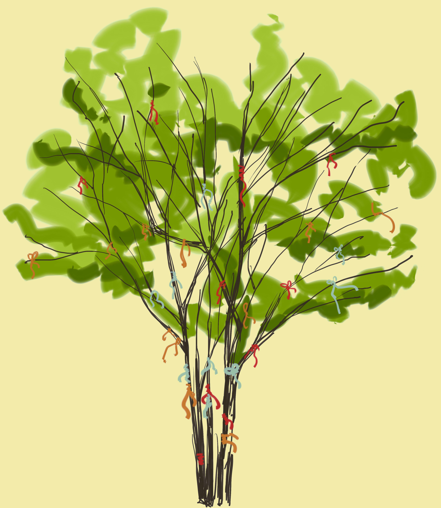

В БЫВШЕЙ ДЕРЕВЕНЬКЕ ДЬЯКОВО СТОИТ ЦЕРКОВЬ УСЕКНОВЕНИЯ ГЛАВЫ ИОАННА ПРЕДТЕЧИ. ЗДЕСЬ ЖЕ БОЛЬШОЙ ОВРАГ,
ПРОЗЫВАЕМЫЙ ГОЛОСОВЫМ, КОТОРЫЙ ДАВНО СЧИТАЕТСЯ МЕСТОМ ТАИНСТВЕННЫМ И АНОМАЛЬНЫМ. ВНИЗУ ДВА ОГРОМНЫХ КАМНЯ -
«ДЕВИЙ» И «ГУСЬ». В 60-Х ГОДАХ “НЕЧИСТЫЙ” ОВРАГ СТАЛ ЧАСТЬЮ МОСКВЫ, ОДНАКО НИКТО НЕ РЕШАЛСЯ ЗДЕСЬ ЧТО-ЛИБО СТРОИТЬ.
НЕХОРОШЕЕ МЕСТО ОБЪЯВИЛИ ЛЕСОПАРКОМ, ВКЛЮЧИВ В СОСТАВ МУЗЕЯ-ЗАПОВЕДНИКА “КОЛОМЕНСКОЕ”. РАСПОЛОЖЕН СТРОГО С ЗАПАДА
НА ВОСТОК, ОН КАК БЫ РАССЕКАЕТ ЕСТЕСТВЕННОЕ МАГНИТНОЕ ПОЛЕ ЗЕМЛИ. ПО ДНУ ОВРАГА ТЕЧЕТ РУЧЕЙ, ОБРАЗОВАННЫЙ РОДНИКАМИ.
ПРЕДАНИЕ РАССКАЗЫВАЕТ, ЧТО РОДНИКИ ЭТИ – СЛЕДЫ КОНЯ ГЕОРГИЯ-ПОБЕДОНОСЦА. ОВРАГ УСЛОВНО РАЗДЕЛЯЕТ КОЛОМЕНСКОЕ НА ДВЕ
ПОЧТИ РАВНЫЕ ЧАСТИ. ОДНА ИЗ НИХ – ЦИВИЛИЗОВАННАЯ. ЗДЕСЬ СОСРЕДОТОЧЕНЫ МУЗЕИ, КАФЕ И СМОТРОВАЯ ПЛОЩАДКА. ДРУГАЯ ЧАСТЬ –
«ДИКАЯ». ЭТО ЗАРОСШИЕ ТРАВОЙ ХОЛМЫ, НЕБОЛЬШИЕ РОЩИЦЫ И СТАРЫЙ ФРУКТОВЫЙ САД.
В БЫВШЕЙ ДЕРЕВЕНЬКЕ ДЬЯКОВО СТОИТ ЦЕРКОВЬ УСЕКНОВЕНИЯ ГЛАВЫ ИОАННА ПРЕДТЕЧИ. ЗДЕСЬ ЖЕ БОЛЬШОЙ ОВРАГ,
ПРОЗЫВАЕМЫЙ ГОЛОСОВЫМ, КОТОРЫЙ ДАВНО СЧИТАЕТСЯ МЕСТОМ ТАИНСТВЕННЫМ И АНОМАЛЬНЫМ. ВНИЗУ ДВА ОГРОМНЫХ КАМНЯ -
«ДЕВИЙ» И «ГУСЬ». В 60-Х ГОДАХ “НЕЧИСТЫЙ” ОВРАГ СТАЛ ЧАСТЬЮ МОСКВЫ, ОДНАКО НИКТО НЕ РЕШАЛСЯ ЗДЕСЬ ЧТО-ЛИБО СТРОИТЬ.
НЕХОРОШЕЕ МЕСТО ОБЪЯВИЛИ ЛЕСОПАРКОМ, ВКЛЮЧИВ В СОСТАВ МУЗЕЯ-ЗАПОВЕДНИКА “КОЛОМЕНСКОЕ”. РАСПОЛОЖЕН СТРОГО С ЗАПАДА
НА ВОСТОК, ОН КАК БЫ РАССЕКАЕТ ЕСТЕСТВЕННОЕ МАГНИТНОЕ ПОЛЕ ЗЕМЛИ. ПО ДНУ ОВРАГА ТЕЧЕТ РУЧЕЙ, ОБРАЗОВАННЫЙ РОДНИКАМИ.
ПРЕДАНИЕ РАССКАЗЫВАЕТ, ЧТО РОДНИКИ ЭТИ – СЛЕДЫ КОНЯ ГЕОРГИЯ-ПОБЕДОНОСЦА. ОВРАГ УСЛОВНО РАЗДЕЛЯЕТ КОЛОМЕНСКОЕ НА ДВЕ
ПОЧТИ РАВНЫЕ ЧАСТИ. ОДНА ИЗ НИХ – ЦИВИЛИЗОВАННАЯ. ЗДЕСЬ СОСРЕДОТОЧЕНЫ МУЗЕИ, КАФЕ И СМОТРОВАЯ ПЛОЩАДКА. ДРУГАЯ ЧАСТЬ –
«ДИКАЯ». ЭТО ЗАРОСШИЕ ТРАВОЙ ХОЛМЫ, НЕБОЛЬШИЕ РОЩИЦЫ И СТАРЫЙ ФРУКТОВЫЙ САД.
1. ОДИН КАМЕНЬ ГЛАДКИЙ И НАЗЫВАЕТСЯ ДЕВИЙ, А ДРУГОЙ - ПУПЫРЧАТЫЙ, БУДТО БЫ ПОКРЫТЫЙ «ГУСИНОЙ КОЖЕЙ» - ИМЕНУЕТСЯ ГУСЕМ. ВЕС - ОКОЛО ПЯТИ ТОНН КАЖДЫЙ. ПРИЧЕМ ОСНОВНАЯ МАССА ЭТИХ ВАЛУНОВ НАХОДЯТСЯ В ЗЕМЛЕ. НА ПОВЕРХНОСТЬ ВЫХОДЯТ НЕБОЛЬШИЕ ВЕРШИНЫ. ОДИН ИЗ КАМНЕЙ ЛЕЖИТ НА ДНЕ ОВРАГА, ДРУГОЙ – НА ЕГО ВЫСОКОМ СКЛОНЕ. ЛЕГЕНДА ГЛАСИТ, ЧТО ЭТО ОСТАНКИ ЗМЕЯ, С КОТОРЫМ БИЛСЯ ЕЩЕ ГЕОРГИЙ ПОБЕДОНОСЕЦ. НИЖНИЙ ИЗ КАМНЕЙ - “ГУСЬ”. СЧИТАЕТСЯ, ЧТО, ЕСЛИ НА НЕМ ПОСИДИТ МУЖЧИНА, ЕГО “МУЖСКАЯ” СИЛА УСИЛИТСЯ. ВЕРХНИЙ ИМЕНУЮТ “ДЕВЬИМ КАМНЕМ”, И ЛЕЧИТ ЖЕНСКОЕ БЕСПЛОДИЕ. УФОЛОГИ УТВЕРЖДАЮТ, ЧТО КАМНИ СВЯЗАНЫ С КОСМОСОМ И ЧТО НЕОДНОКРАТНО В НЕБЕ НАД КОЛОМЕНСКИМ ВИДЕЛИ НЛО.  ПОСЛЕДОВАТЕЛИ ЭЗОТЕРИЧЕСКИХ УЧЕНИЙ УВЕРЕНЫ, ЧТО ОВРАГ – ВАЖНЕЙШЕЕ МЕСТО В САКРАЛЬНОЙ ГЕОГРАФИИ МОСКВЫ. КСТАТИ: ДЕВА — ЭТО ФИННО-УГОРСКАЯ ЖЕНСКАЯ ПОДЗЕМНАЯ БОГИНЯ, А ГУСЬ — СВЯЩЕННАЯ ПТИЦА ФИННО-УГОРСКОЙ МИФОЛОГИИ, ПЛАВАЮЩАЯ В ПОДЗЕМНОМ ОКЕАНЕ И СОТВОРИВШАЯ НЕКОГДА ВСЕ СУЩЕЕ. ВЕРУЮЩИЕ ПРОХОДЯТ МИМО КАМНЕЙ В ХРАМ И СЧИТАЮТ «МАРШРУТ» СВЯТЫМ. ПО ПРЕДАНИЮ, ЗДЕСЬ ПРОСКАКАЛ ГЕОРГИЙ ПОБЕДОНОСЕЦ, А ОДИН ИЗ КАМНЕЙ ПОХОЖ НА ДВУХМЕТРОВУЮ ПОДКОВУ, ПОКРЫТУЮ ЧЕШУЕЙ. ПО ПРЕДАНИЯМ, ИМЕННО РЯДОМ С ГУСЬ-КАМНЕМ ПРОВАЛИЛСЯ ВО ВРЕМЕНИ ОТРЯД ТАТАРО-МОНГОЛЬСКИХ ВАРВАРОВ
СЧИТАЕТСЯ, ЧТО КАМНИ НЕ УТРАТИЛИ СВОИХ ВОЛШЕБНЫХ СВОЙСТВ ДО СЕГОДНЯШНИХ ДНЕЙ. ДОСТАТОЧНО ПРИКОСНУТЬСЯ РУКОЙ К ИХ ПОВЕРХНОСТИ И ЗАГАДАТЬ ЖЕЛАНИЕ. ДЛЯ ВЕРНОСТИ МОЖНО ЗАВЯЗАТЬ ЛЕНТОЧКУ НА ВЕТВЯХ СОСЕДНЕГО ДЕРЕВА. И ТОГДА КАМНИ, В КОТОРЫХ ПО ПРЕДАНИЯМ ДО СИХ ПОР ЖИВУТ ДУХИ ДРЕВНИХ БОГОВ, ОБЯЗАТЕЛЬНО ПОМОГУТ ОСУЩЕСТВИТЬ МЕЧТУ.
2. ПРОВАЛ ВО ВРЕМЕНИ: В ДОКУМЕНТАХ ПОЛИЦЕЙСКОГО УПРАВЛЕНИЯ МОСКОВСКОЙ ГУБЕРНИИ XIX ВЕКА ОТМЕЧАЮТСЯ СЛУЧАИ ЗАГАДОЧНОГО ИСЧЕЗНОВЕНИЯ ЖИТЕЛЕЙ СОСЕДНИХ СЕЛ. ДВОЕ КРЕСТЬЯН ДЕРЕВНИ САДОВНИКИ, АРХИП КУЗЬМИН И ИВАН БОЧКАРЕВ, БЕЗ ВЕСТИ ПРОПАВШИЕ ЕЩЕ В 1810 ГОДУ, ВДРУГ ПОЯВИЛИСЬ... В 1831-М! ОНИ РАССКАЗАЛИ, ЧТО ВОЗВРАЩАЛИСЬ НОЧЬЮ ДОМОЙ ИЗ СОСЕДНЕЙ ДЕРЕВНИ И РЕШИЛИ ПРОЙТИ ГОЛОСОВЫМ ОВРАГОМ, ХОТЯ ЭТО МЕСТО СЧИТАЛОСЬ “НЕЧИСТЫМ”. НА ДНЕ ДОЛИНЫ КЛУБИЛСЯ ГУСТОЙ ТУМАН, В КОТОРОМ ВДРУГ ВОЗНИК КАКОЙ-ТО “КОРИДОР, ЗАЛИТЫЙ БЕЛЕСОВАТЫМ СВЕТОМ”! КРЕСТЬЯНЕ ПОШЛИ ТУДА И ВСТРЕТИЛИ ЗАРОСШИХ ШЕРСТЬЮ ЛЮДЕЙ, КОТОРЫЕ ЗНАКАМИ ПОПЫТАЛИСЬ УКАЗАТЬ ИМ ОБРАТНУЮ ДОРОГУ. КРЕСТЬЯНЕ ПРОДОЛЖИЛИ ПУТЬ, А ПРИДЯ В ДЕРЕВНЮ, УВИДЕЛИ СВОИХ ЖЕН И ДЕТЕЙ ПОСТАРЕВШИМИ НА ДВАДЦАТЬ ЛЕТ. В ДЕЛО ВМЕШАЛАСЬ ПОЛИЦИЯ. ПО НАСТОЯНИЮ СЛЕДОВАТЕЛЕЙ В ОВРАГЕ ПРОВЕЛИ ЭКСПЕРИМЕНТ, В ХОДЕ КОТОРОГО ОДИН ИЗ КРЕСТЬЯН СНОВА ИСЧЕЗ В ТУМАНЕ И НАЗАД УЖЕ НЕ ВЕРНУЛСЯ. ДРУГОЙ, УВИДЕВ ЭТО, ВПАЛ В ДЕПРЕССИЮ И ВПОСЛЕДСТВИИ ПОКОНЧИЛ С СОБОЙ. ЭТОТ СЛУЧАЙ ОПИСАН В ГАЗЕТЕ "МОСКОВСКИЕ ВЕДОМОСТИ" ОТ 9.07.1832 ГОДА. ДОКУМЕНТЫ ПОЛИЦЕЙСКОГО УПРАВЛЕНИЯ МОСКОВСКОЙ ГУБЕРНИИ, ОТНОСЯЩИЕСЯ К КОЛОМЕНСКОЙ ВОЛОСТИ ЗА ПЕРИОД 1825-1917 ГГ., НЕОДНОКРАТНО ОТМЕЧАЮТ СЛУЧАИ ЗАГАДОЧНОГО ИСЧЕЗНОВЕНИЯ ЛЮДЕЙ СРЕДИ ЖИТЕЛЕЙ СЕЛ КОЛОМЕНСКОЕ, ДЬЯКОВО, САДОВНИКИ И НОВИНКИ.
3. МОСКОВСКИЙ «СНЕЖНЫЙ ЧЕЛОВЕК»: В ДРЕВНОСТИ ГОЛОСОВОЙ ОВРАГ НАЗЫВАЛИ ЕЩЕ И “ВОЛОСОВ” - В ЧЕСТЬ ДРЕВНЕГО БОЖЕСТВА ВОЛОСА ИЛИ BEЛЕСА, ВЛАСТИТЕЛЯ ПОДЗЕМНОГО МИРА, ПОКРОВИТЕЛЯ ДОМАШНИХ ЖИВОТНЫХ И БОГАТСТВА. ТАК МОГЛИ НАЗВАТЬ ОВРАГ ДРЕВНИЕ ФИННО-УГОРСКИЕ ПЛЕМЕНА, ЖИВШИЕ ЗДЕСЬ ЗАДОЛГО ДО СЛАВЯН. ИМЯ БОГА ПРОИСХОДИТ ОТ СЛОВА “ВОЛОХАТЫЙ”, ТО ЕСТЬ МОХНАТЫЙ. ВИДЕЛИ “ВОЛОСАТЫХ ЛЮДЕЙ” В ГОЛОСОВОМ ОВРАГЕ, ПРИНИМАЯ ИХ НЕ ТО ЗА НЕЧИСТЬ, НЕ ТО ЗА ПРИЗРАКОВ. ОНИ ОПИСАНЫ И В ХРОНИКАХ ВРЕМЕН ИВАНА ГРОЗНОГО. В 1926 ГОДУ МИЛИЦИОНЕР НАТКНУЛСЯ В ГУСТОМ ТУМАНЕ НА “ЗАРОСШЕГО ШЕРСТЬЮ ДИКАРЯ” РОСТОМ 2,5 МЕТРА И ВЫПАЛИЛ В НЕГО ВСЮ ОБОЙМУ ИЗ ПИСТОЛЕТА. ПРИЗРАК РАСТАЯЛ В ТУМАНЕ. ЭТОТ СЛУЧАЙ БЫЛ ОПИСАН В СТАТЬЕ А.РЯЗАНЦЕВА "ПИОНЕРЫ ЛОВЯТ ЛЕШЕГО". (ФОТО ЗНАМЕНИТОГО ЕТИ - ВОЗМОЖНО ТАК ВЫГЛЯДИТ СНЕЖНЫЙ ЧЕЛОВЕК КОЛОМЕНСКОГО)
4. ВОИНЫ ИЗ ПРОШЛОГО: В ЛЕТОПИСИ XVII ВЕКА ОПИСЫВАЕТСЯ УДИВИТЕЛЬНАЯ ИСТОРИЯ. В 1621 ГОДУ У ВОРОТ ЦАРСКОГО ДВОРЦА В КОЛОМЕНСКОМ НЕОЖИДАННО ПОЯВИЛСЯ НЕБОЛЬШОЙ ОТРЯД ТАТАРСКИХ ВСАДНИКОВ. ПОСЛЕ ТОГО, КАК ИХ ВЗЯЛИ В ПЛЕН СТРЕЛЬЦЫ, ВСАДНИКИ РАССКАЗАЛИ, ЧТО ОНИ - ВОИНЫ ХАНА ДЕВЛЕТ-ГИРЕЯ, ВОЙСКА КОТОРОГО ПЫТАЛИСЬ ЗАХВАТИТЬ МОСКВУ В 1571 ГОДУ, НО БЫЛИ РАЗБИТЫ. НАДЕЯСЬ УЙТИ ОТ ПРЕСЛЕДОВАНИЯ, КОННЫЙ ОТРЯД СПУСТИЛСЯ В ГОЛОСОВ ОВРАГ, ОКУТАННЫЙ ГУСТЫМ ТУМАНОМ. ТАТАРЫ ПРОВЕЛИ ТАМ, КАК ИМ КАЗАЛОСЬ, НЕСКОЛЬКО МИНУТ, А ВЫНЫРНУЛИ ЛИШЬ ЧЕРЕЗ 50 ЛЕТ. ОДИН ИЗ ПЛЕННЫХ ГОВОРИЛ, ЧТО ТУМАН БЫЛ НЕОБЫЧНЫЙ, ОТСВЕЧИВАЮЩИЙ ЗЕЛЕНОВАТЫМ ЦВЕТОМ, НО В СТРАХЕ ПЕРЕД ПОГОНЕЙ НА ЭТО НИКТО НЕ ОБРАТИЛ ВНИМАНИЯ. ЦАРЬ МИХАИЛ ФЕДОРОВИЧ ПРИКАЗАЛ УЧИНИТЬ ДОЗНАНИЕ, КОТОРОЕ ПОКАЗАЛО: ТАТАРЫ, СКОРЕЕ ВСЕГО, ГОВОРИЛИ ПРАВДУ. ДАЖЕ ИХ ОРУЖИЕ И ЭКИПИРОВКА УЖЕ НЕ СООТВЕТСТВОВАЛИ ВООРУЖЕНИЮ ТОГО ВРЕМЕНИ, А БОЛЬШЕ ПОХОДИЛИ НА УСТАРЕВШИЕ ОБРАЗЦЫ СЕРЕДИНЫ XVI СТОЛЕТИЯ.
5. ЗАГАДОЧНАЯ ЛЕСТНИЦА: В ПРЕДДВЕРИИ МОСКОВСКОЙ ОЛИМПИАДЫ-80 ГЛАВНЫЙ ИНЖЕНЕР УПРАВЛЕНИЯ «МОСОБЛСТРОЙРЕСТАВРАЦИЯ» В.ПОРШНЕВ РУКОВОДИЛ РЕМОНТНЫМИ РАБОТАМИ В ЦЕРКВИ УСЕКНОВЕНИЯ ГЛАВЫ ИОАННА ПРЕДТЕЧИ, ТОГДА БЕСХОЗНОЙ И ЗАБРОШЕННОЙ. В ЦЕНТРЕ ХРАМА, БЛИЖЕ К АЛТАРНОЙ ЧАСТИ, БЫЛА ОБНАРУЖЕНА СНЯТАЯ БЕЛОКАМЕННАЯ ПЛИТА ПОЛА, А ПОД НЕЙ УТРАМБОВАННЫЙ ПЕСОК. КОГДА РАБОЧИЕ НАЧАЛИ ЕГО РАЗГРЕБАТЬ, ОТКРЫЛИСЬ СТУПЕНИ ИЗ БЕЛОГО КАМНЯ, ПОД ОСТРЫМ УГЛОМ УХОДИВШИЕ ВНИЗ, В СТОРОНУ ЗАПАДНОЙ СТЕНЫ. НАД СТУПЕНЯМИ И ЛАЗОМ ОБНАРУЖИЛСЯ СВОД ИЗ БОЛЬШЕМЕРНОГО КИРПИЧА. ПРОКОПАЛИ МЕТРА ПОЛТОРА – ЛЕСТНИЦА УВОДИЛА ДАЛЬШЕ. ГЛАВНЫЙ ИНЖЕНЕР И ВЕДУЩИЙ АРХИТЕКТОР-РЕСТАВРАТОР Н.СВЕШНИКОВ РАСПОРЯДИЛИСЬ ПРИВАРИТЬ МЕТАЛЛИЧЕСКУЮ ДВЕРЬ И НАВЕСИТЬ ЗАМКИ. ПОКА ВЕЛИ ПЕРЕГОВОРЫ С РУКОВОДСТВОМ МУЗЕЯ-ЗАПОВЕДНИКА "КОЛОМЕНСКОЕ" О ПРОДОЛЖЕНИИ РАБОТ, КТО-ТО НОЧЬЮ СШИБ ЗАМКИ И ПРОКОПАЛ ЛАЗ В ГЛУБЬ МЕТРА НА ЧЕТЫРЕ. УВИДЕВ ЭТО И НЕ ИМЕЯ СРЕДСТВ НА ПРОДОЛЖЕНИЕ РАБОТ, СВЕШНИКОВ С ПОРШНЕВЫМ РЕШИЛИ ОБЕЗОПАСИТЬ ИНТЕРЕСНЫЙ ОБЪЕКТ: ЗАСЫПАЛИ ЕГО ПЕСКОМ, УТРАМБОВАЛИ, ПРИМЕРНО НА ПОЛМЕТРА ЗАЛИЛИ БЕТОНОМ И ВЕРНУЛИ НА МЕСТО БЕЛОКАМЕННУЮ ПЛИТУ...